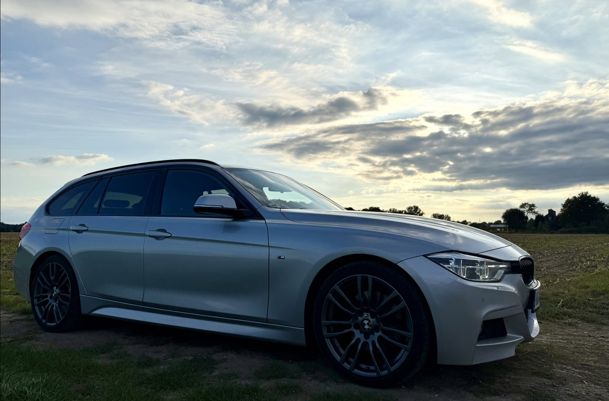
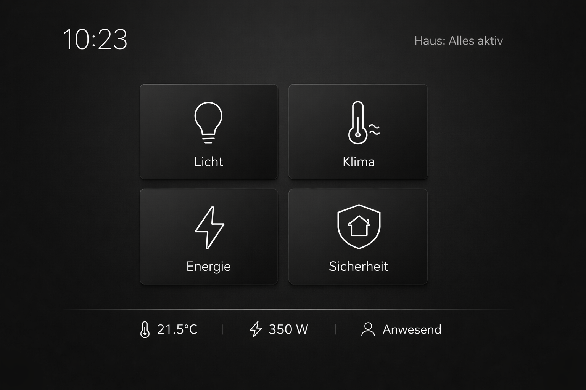

KI / Kreative Anwendungen
Einsatz moderner KI-Tools zur Ideenfindung, Visualisierung und experimentellen Umsetzung digitaler Konzepte.

Fahrzeug & Technik
Pflege, Optimierung und technisches Verständnis komplexer Systeme mit Fokus auf Funktion, Ästhetik und Details.

Bike / Mountainbike
Wartung, Optimierung und Einsatz moderner Komponenten – mit Fokus auf Performance, Kontrolle und Fahrgefühl.

Smart Home / Automationen
Konzeption und Umsetzung intelligenter Automationslösungen zur Steuerung von Licht, Energie, Sicherheit und Alltag.